The Principal of Tokyo Jujutsu High and a grade 1 jujutsu
sorcerer.
Jujutsu: Cursed Corpses
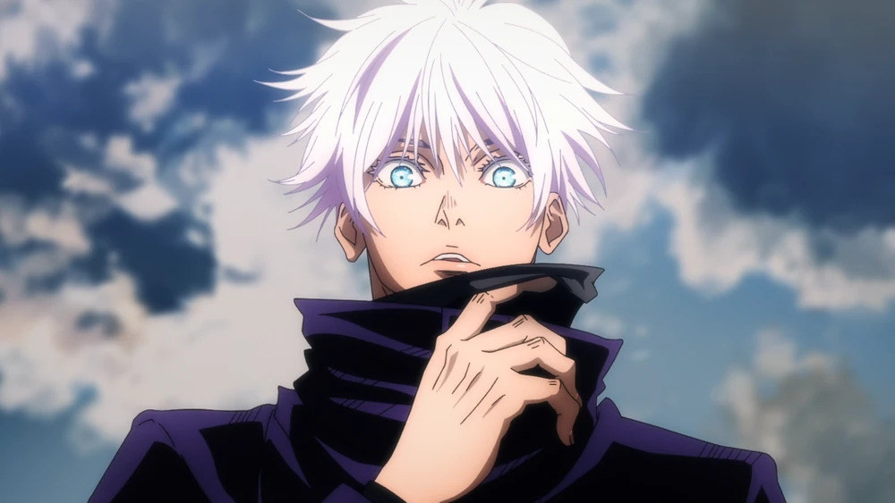
Satoru Gojo
A special grade jujutsu sorcerer and recognized as the
strongest in the world. The first person to inherit
both the Limitless and the Six Eyes in four hundred years
Jujutsu: Cursed Energy Manipulation
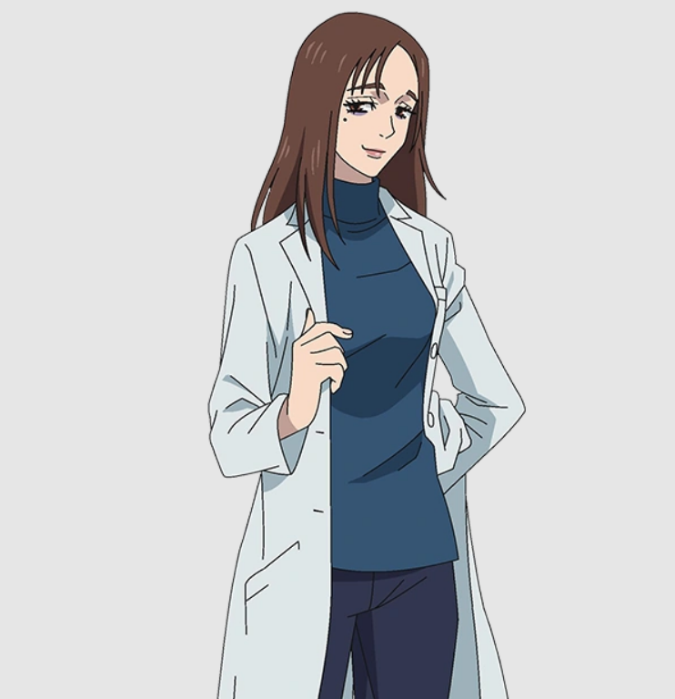
Shoko Ieiri
An alumna of Tokyo Jujutsu High, having been classmates with
Satoru Gojo and Suguru Geto. After graduating into a full-fledged jujutsu sorcerer, Shoko
became the school's primary doctor.
Cursed Technique: Reverse Cursed Technique
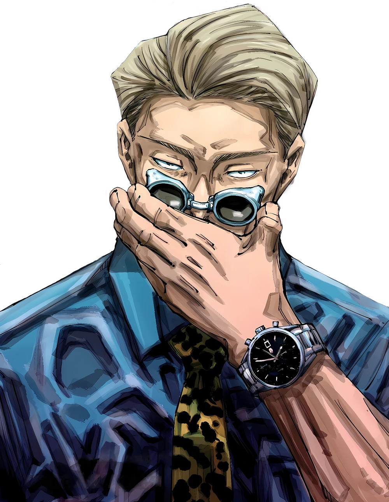
Kento Nanami
A former student of Tokyo Jujutsu High where he was an
underclassman of Satoru Gojo and Suguru Geto.
Cursed Technique: Innate Technique
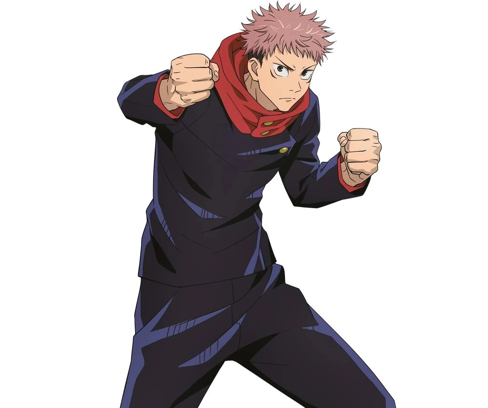
Yuji Itadori
The main protagonist of the Jujutsu Kaisen series. He is the
son of Jin Itadori and Kaori Itadori, and the grandson of Wasuke Itadori.
Cursed Technique: Innate Technique
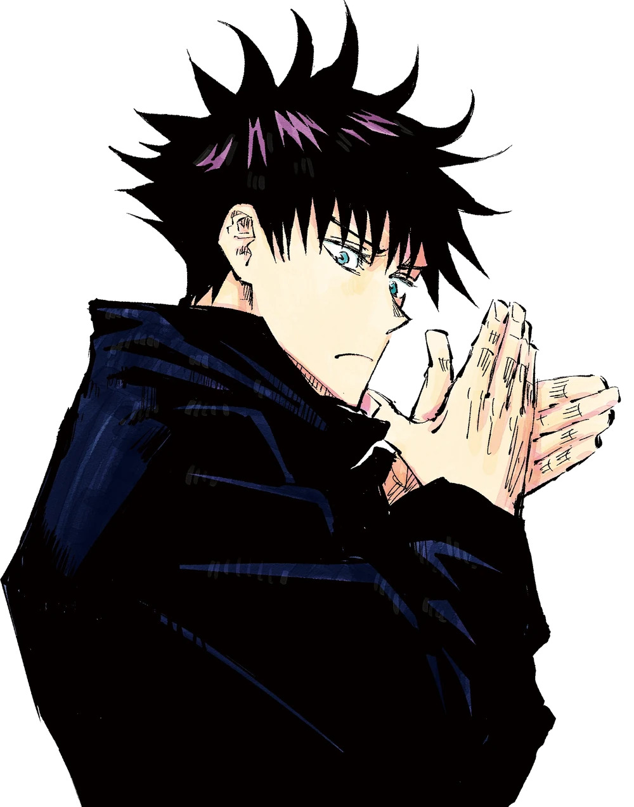
Megumi Fushiguro
A grade 2 jujutsu sorcerer and first-year student at Tokyo
Jujutsu High alongside Yuji Itadori and Nobara Kugisaki.
Jujutsu: Cursed Energy Manipulation
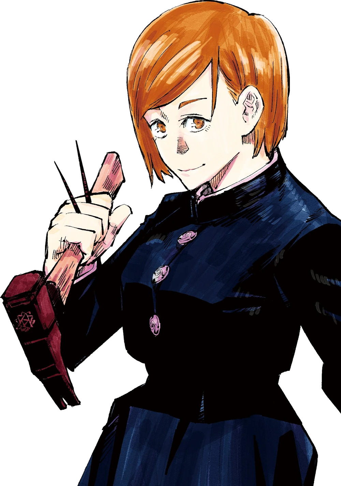
Nobara Kugisaki
A first-year student and grade 3 jujutsu sorcerer at Tokyo
Jujutsu High studying under Satoru Gojo alongside Yuji and Megumi.
Cursed Technique: Innate Technique
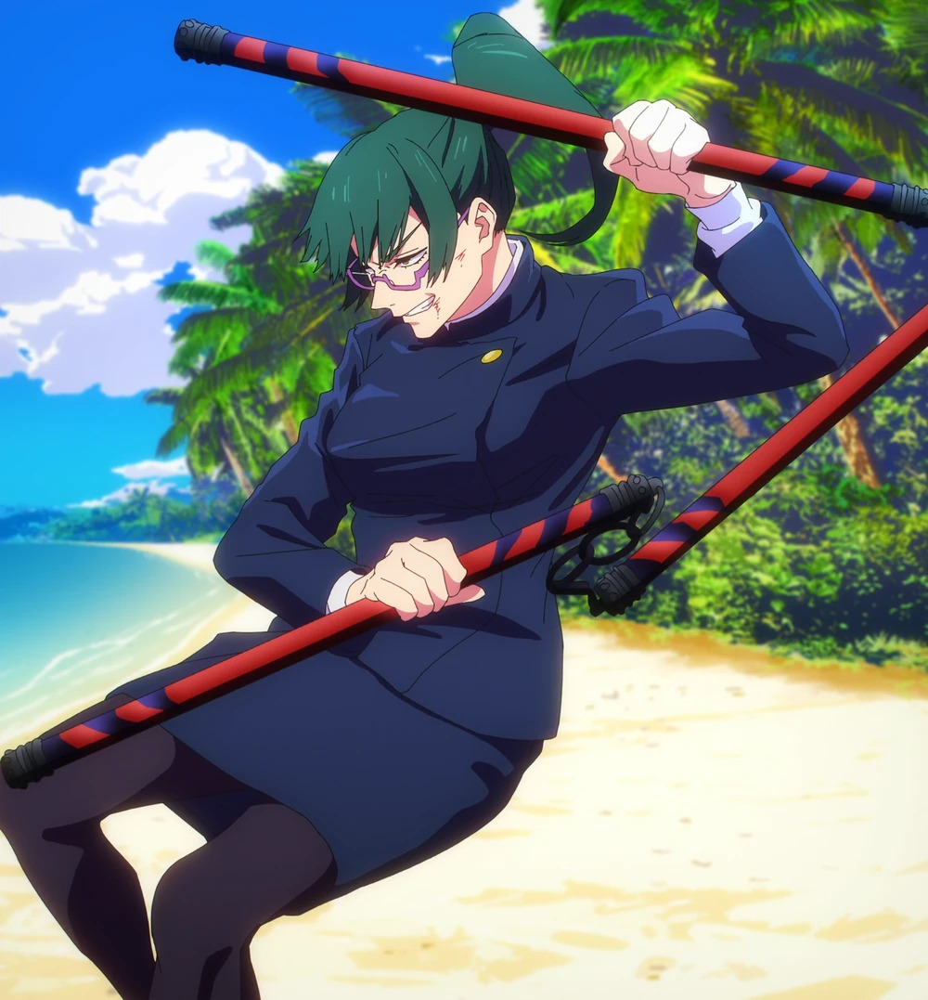
Maki Zenin
She is currently a second-year at Tokyo Jujutsu High. Daughter
of Ogi Zenin and the elder twin sister of Mai Zenin, Maki was born in the Zenin Clan.
Equipment: Cursed Tools
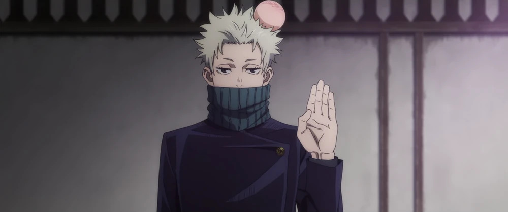
Toge Inumaki
A descendant of the Inumaki clan and has inherited the clan's
cursed speech, which he's developed his own unique speech pattern for in order to avoid
cursing others.
Cursed Technique: Inherited Technique
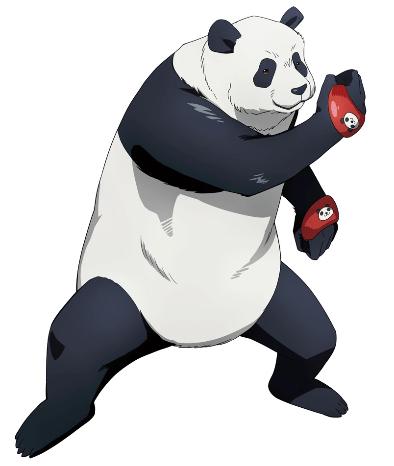
Panda
Despite his name, Panda is not an actual panda, he's an
Abrupt-Mutation Cursed Corpse created by Masamichi Yaga. He attends Jujutsu High as a
second-year student along with Maki, Toge, and Yuta.
Jujutsu: Cursed Corpses Cores
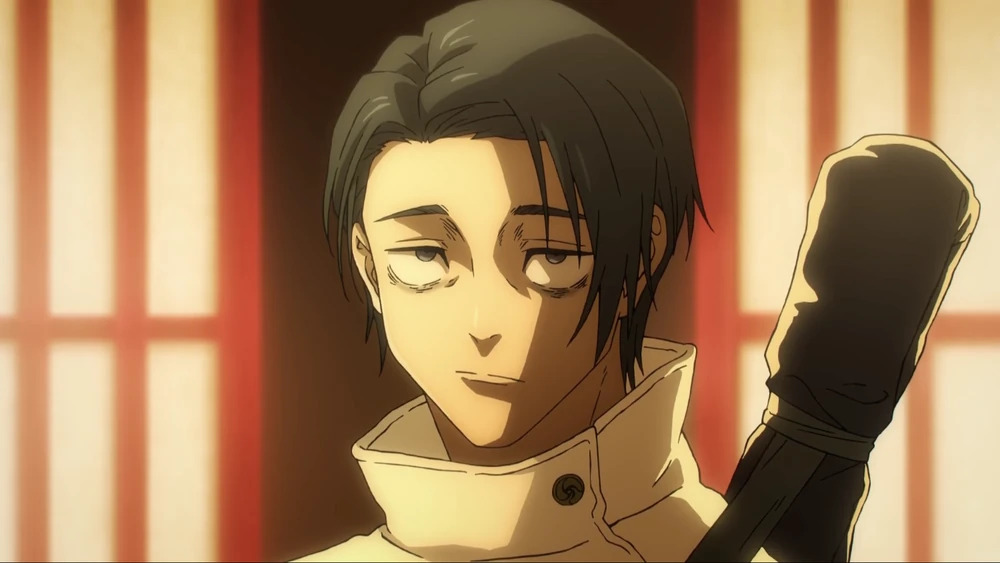
Yuta Okkotsu
He was initially a special grade cursed human haunted by his
late childhood friend, Rika Orimoto.
Cursed Technique: Rika
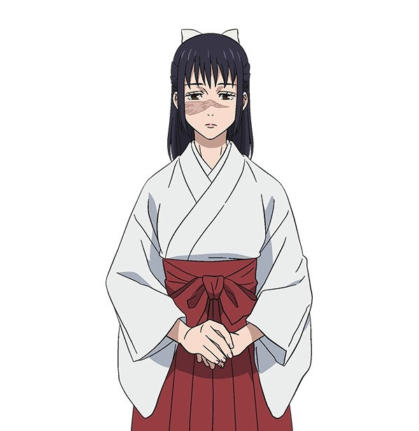
Utahime Iori
She is a semi-grade 1 jujutsu sorcerer and student supervisor
at Kyoto Jujutsu High.
Cursed Technique: Innate Technique
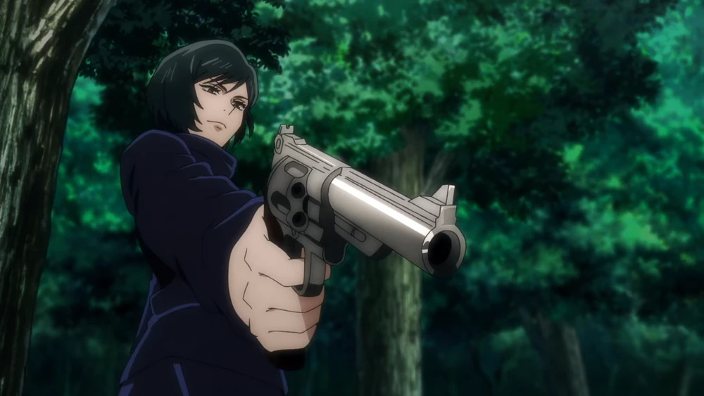
Mai Zenin
A second-year at student at Kyoto Jujutsu High, a member of the
Zenin clan and the younger twin sister of Maki Zenin.
Cursed Technique: Innate Technique
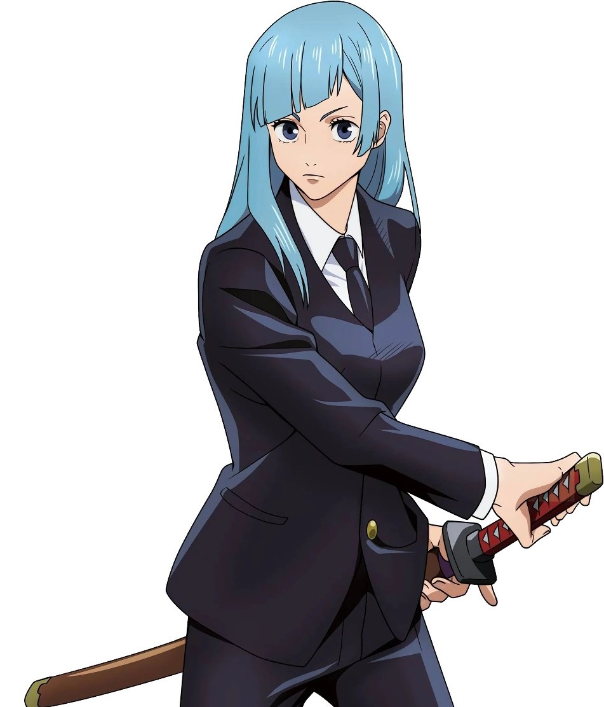
Kasumi Miwa
A second-year student at Kyoto Jujutsu High. A jujutsu sorcerer
who uses the New Shadow Style swordsmanship techniques.
Cursed Technique: New Shadow Style Techniques
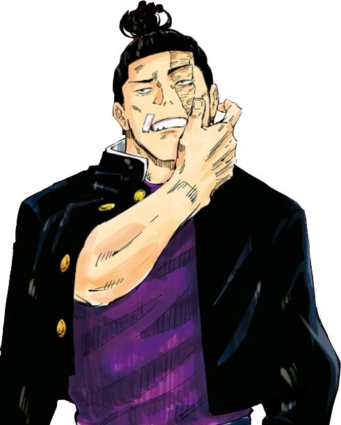
Aoi Todo
A third-year student at Kyoto Jujutsu High School and a grade
1 jujutsu sorcerer. He was mentored by Yuki Tsukumo in his youth and considers Yuji Itadori
his best friend.
Cursed Technique: Innate Technique
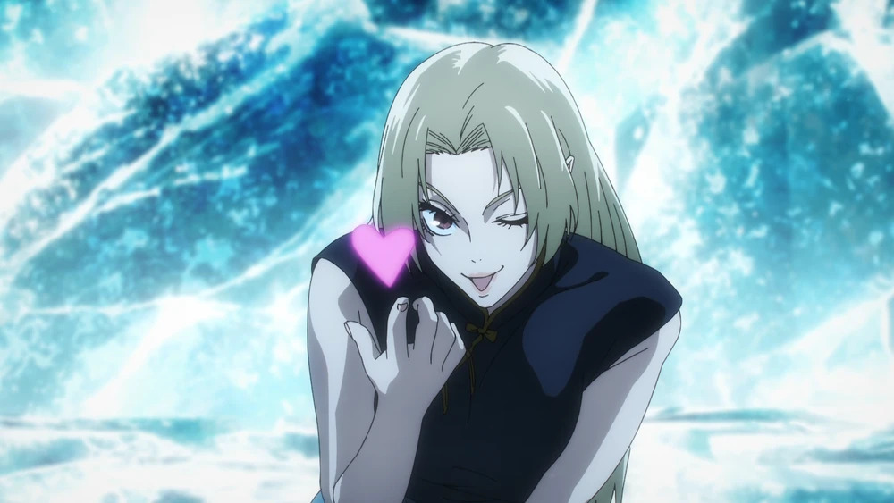
Yuki Tsukumo
One of only four special grade jujutsu sorcerers. Yuki is
not aligned with Jujutsu High.